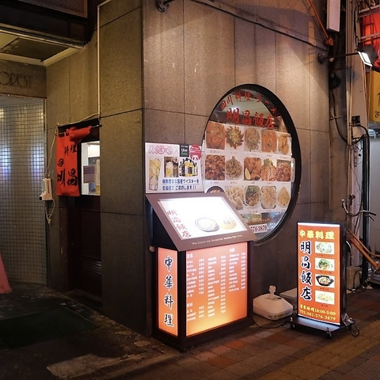

明昌飯店 (We just call it "our favorite chinese food")
★★★★★
Tastiest chinese food on the area. A lot of different options. Owners are really nice!.

- Instalations: Could it be cleaner 8/10
- Location: 〒730-0027 Hiroshima, Naka Ward, Yagenbori, 5−15 フォレストビル 1Ｆ (Google Maps: https://maps.app.goo.gl/oRPr5F8w8VKfHsn47)
- ¥1000-¥4000
- Cash only.